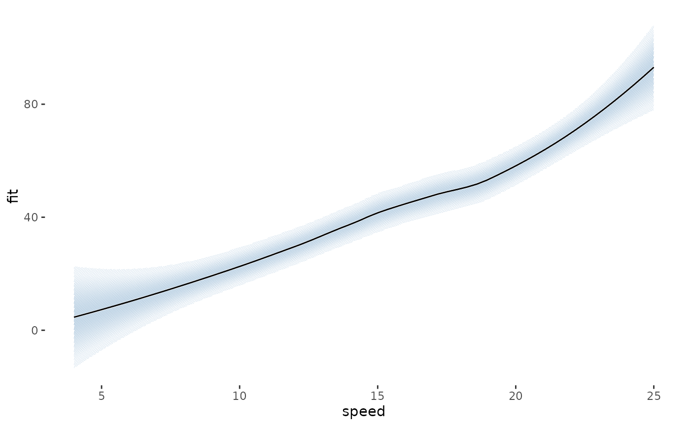
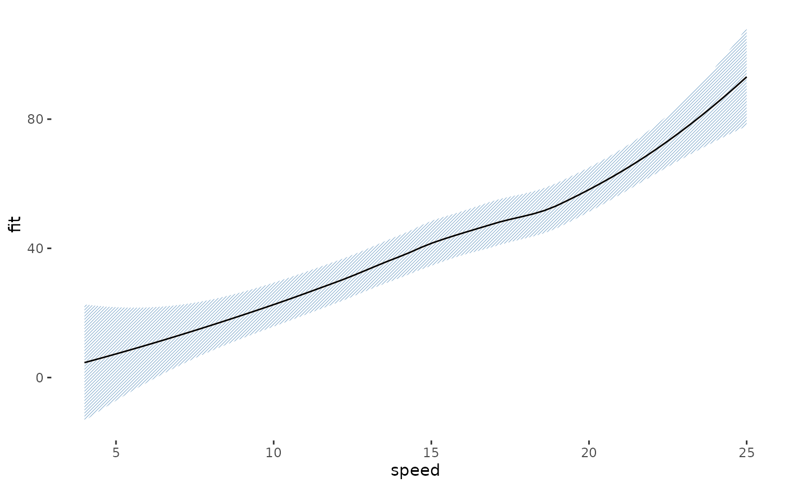

Takes a finished plot and returns it printed: every filled layer screened, a paper hairline under every line that
crosses a screen, and the halftone theme modifier on top. One call, where with_halftone() and with_halo()
would otherwise be composed layer by layer.
Arguments
- plot
A ggplot, or a patchwork of them. The object handed in is left alone.
- halo
Width in mm of the paper hairline drawn under lines that cross a screen, the printer's knockout channel. 0 turns it off.
- theme
Add
theme_halftone(): paper ground, no gridlines under the screen, screen-sized legend keys and the ink palette.FALSEkeeps the plot's own theme.- ...
Passed to
with_halftone()for every layer it screens, for examplepitch,shape,grid,levelsordot_max.
What it does to each layer
The treatment follows the geom.
Screened: ribbons, areas, densities, bars, columns, histograms, tiles, rectangles, polygons, sf geometries, violins, boxplots, crossbars and smooths. Each gets the tone profile
with_halftone()picks for it, so bars and maps come out flat, intervals follow the likelihood of the estimate, and densities get a soft vignette.Haloed: lines, paths, steps, contours, segments and points, but only where a screened layer sits underneath them. Anything drawn before the first screen has nothing to stay legible against and is left alone.
Left alone: text, labels, error bars, rugs, reference lines, rasters, and any geom not listed above.
A layer you wrapped yourself is left as you wrapped it, so halftone_plot() can be applied to a plot that is
already part screened, and applying it twice changes nothing the second time.
What it does not do
It screens the fill and chooses no colours. Line weights, point shapes and any colour you set or mapped stay as the plot set them, so a figure built for the screen from the start still looks better: see the package README for the pair.
A colour you did not choose is a different matter, and it belongs to the theme rather than here. On ggplot2 4.0 an
unmapped geom colour comes from theme(geom = ), whose stock accent is the blue geom_smooth() draws its line in.
theme_halftone() sets that accent to the package's ink, so the one colour in a screened figure that would sit
outside the register comes into it. theme = FALSE keeps your own theme, and that with it.
geom_raster() draws an image rather than polygons, so there is nothing to clip a screen to and the layer prints
as it was. Use geom_tile() instead, or geom_halftone() on the field.
See also
with_halftone() to screen one layer, with_press() to print the result.
Examples
m <- loess(dist ~ speed, cars, span = 0.9)
nd <- data.frame(speed = seq(4, 25, length.out = 60))
pr <- predict(m, nd, se = TRUE)
nd$fit <- pr$fit; nd$lo <- pr$fit - 1.96 * pr$se.fit; nd$hi <- pr$fit + 1.96 * pr$se.fit
p <- ggplot2::ggplot(nd, ggplot2::aes(speed)) +
ggplot2::geom_ribbon(ggplot2::aes(ymin = lo, ymax = hi), fill = "steelblue") +
ggplot2::geom_line(ggplot2::aes(y = fit))
halftone_plot(p)

halftone_plot(p, pitch = 0.6, shape = "line")
